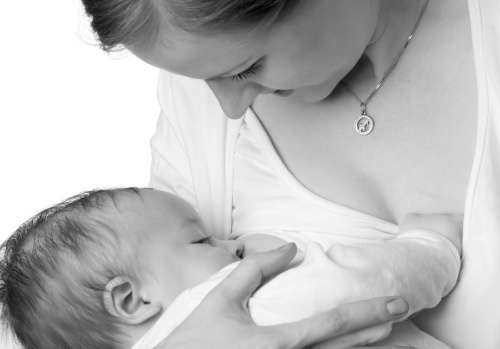

Besszer Mónika

laktációs (szoptatási) szaktanácsadó (IBCLC)
perinatális (szülés körüli) szaktanácsadó
babamasszázs oktató
ICST (kranioszakrális specialista)
Telefon: +36-30/418-3250 | E-mail


Szoptatás
Az újszülött alapvető emberi szükséglete az, hogy szoptassák! Az édesanyákat sok szoptatással kapcsolatos kérdés foglalkoztatja már a várandósság alatt. A szoptatás nem csak táplálék a gyermek számára, hanem biztonságot is jelent neki. Testét és lelkét is táplálja. A szoptatás nem csak újszülött- és csecsemő korban előnyös, hanem hosszú távon is jó hatással van mind a gyermek, mind az édesanya számára.
Miben tudok segíteni?
Felkészülést biztosítok már a várandósság alatt a szoptatásra (egyéni és csoportos)
Egyéni tanácsadás azoknak az édesanyáknak
- akiknél nem volt sikeres az első gyermek szoptatása, most pedig a másodikat, harmadikat várják
- akiknél valamilyen krónikus betegség áll fent, mely a sikeres szoptatást befolyásolhatja
- akik azért aggódnak, mert a családjukban nem volt sikeres a szoptatás (őket sem szoptatta az édesanyjuk)
Minden megszült édesanyának ajánlom a konzultációt a szülést követő napokban!
Személyes konzultáció problémás esetekben a szoptatás során bármikor:
- mellgyulladás
- sebes mellbimbó, fájdalmas szoptatás, szoptatás után jelentkező hasogató fájdalom
- bőrtünetek a mellen és bimbón
- koraszülött csecsemő, beteg, fejlődési rendellenességgel született csecsemő szoptatása
- tej túltermelés
- szoptatás az anya betegsége, gyógyszerszedése idején
- nyugtalanul szopó csecsemő
- szopási sztrájk
- sokat síró csecsemő
- elégtelen gyarapodás (nem hízik, vagy miért eszik ennyit)
- elégtelen tejtermelés
- a tejtermelés újbóli megindítása (relaktáció)
- szoptatásbarát pótlási módszerek megtanítása, ha nincs elegendő anyatej, vagy a csecsemő nem tud elég hatékonyan szopni
- szoptatás és szexualitás
Ki a szoptatási szaktanácsadó?
Miért fordulj szoptatási szaktanácsadóhoz (IBCLC-hez)? A nemzetközi vizsgát tett laktációs (szoptatási) szaktanácsadó (IBCLC) olyan specialista, aki tudományosan megalapozott, egységes szemléletmód alapján közelít a szoptatás során felmerülő problémákhoz, és holisztikus gyakorlatot folytat. Fontos számára, és ezért szem előtt tartja a szoptató anya és a szoptatott csecsemő különleges igényeit. Tudományos alapú (evidence base) információk átadásával segíti a szoptatást, az anya és az őt körülvevő család egyéni útjának és megoldásainak megtalálását.
